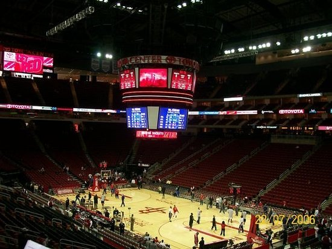

Houston Rockets - Fundado em 1967, o Houston Rockets é uma das equipes históricas da NBA, com dois títulos da NBA conquistados nos anos 1990, liderados por Hakeem Olajuwon. Após um período de reconstrução, a equipe tem se concentrado no desenvolvimento de jovens talentos, como Jalen Green e Jabari Smith Jr., com a esperança de retomar a competitividade em um futuro próximo.
Elenco - Jalen Green (#4), Alperen Şengün (#28), Fred VanVleet (#23), Jabari Smith Jr. (#1), Kevin Porter Jr. (#3), Dillon Brooks (#24), Tari Eason (#17), Amen Thompson (#0), Jeff Green (#32), Cam Whitmore (#2).
Títulos NBA - 2 (1994, 1995)
Títulos Conferência - 4 (1981, 1994, 1995, 2021)
Estádio - Toyota Center (18.000)
